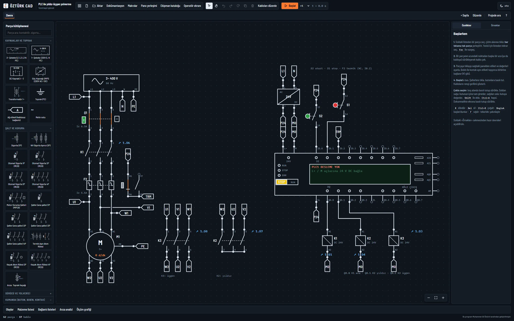
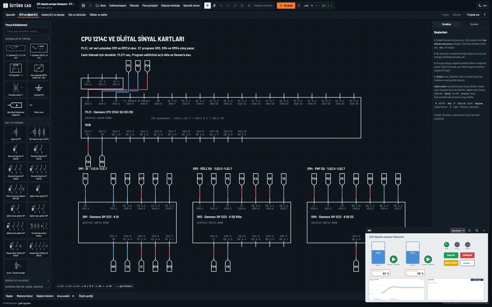
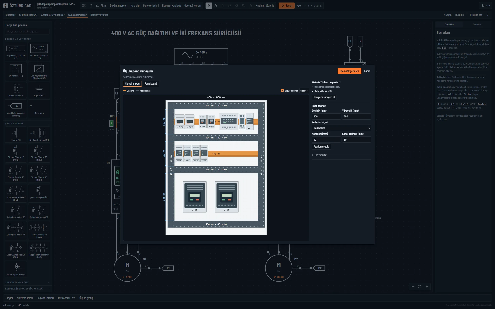
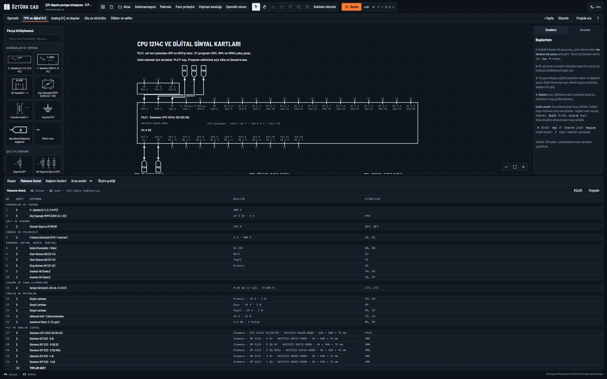
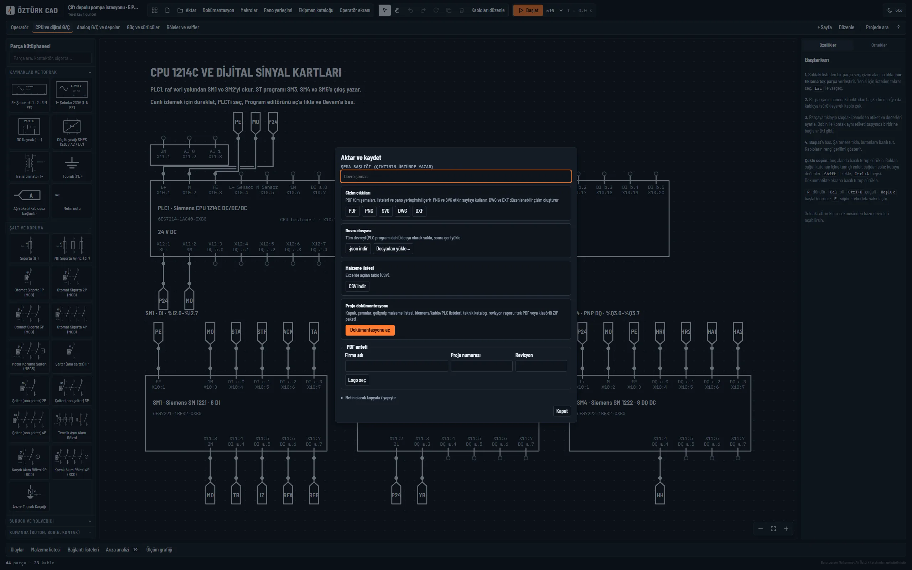
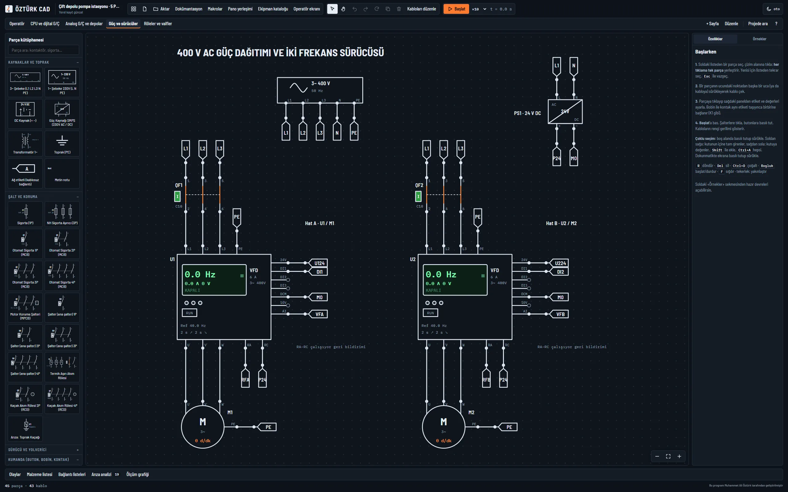

Elektrik Devre Tasarımı
Güç ve kumanda devrelerini sembol kütüphanesiyle çiz. Klemens, kablo ve etiketler projeyle birlikte numaralanır.
- Sayfa
- Çok sayfalı, çapraz başvurulu
- İçe aktarma
- EPLAN EDZ ürün dosyaları

ÖZTÜRK CAD
Projelerini tasarla, devrelerini oluştur, sistemlerini simüle et.
ÖZTÜRK CAD’i İndirSürüm — — Windows Güncelleme
Şemayı çiz. PLC ile dene. Panoyu yerleştir. Malzeme listesini ve çizim dosyalarını aynı projeden teslim et.
Güç ve kumanda devrelerini sembol kütüphanesiyle çiz. Klemens, kablo ve etiketler projeyle birlikte numaralanır.

Butona bas, akımın yolunu gör. Sanal PLC, gerçek CPU ve kart modelleriyle Structured Text programını devreyle birlikte çalıştırır.

Ekipman kataloğu üretici, sipariş kodu ve teknik bilgileri tutar. Ürünler panoya gerçek ölçüleriyle yerleşir.

Projedeki her parça sayfa ve adetle listeye girer. Kablo listesi ve teknik katalog aynı veriden hazırlanır.

Kapak ve içindekiler ile tam proje PDF’i. Çizimleri DXF ve DWG olarak CAD programlarına aktar.

Sayfaları düzenle, projede ara, revizyonları karşılaştır. Projeler bilgisayarında kalır; internet gerekmez.

PDF · 3 sayfa · 61 KB
Kurulum, lisans anahtarını girme, süreli lisans ve sık karşılaşılan durumlar. Sürüm 1.16.0.
PDF · 67 sayfa · 3,7 MB
Kurulum ve etkinleştirmeden çizim, simülasyon, PLC, HMI, ekipman kataloğu, pano yerleşimi ve çıktılara kadar adım adım. Sürüm 1.16.0.
ZIP · 16 proje · 34 KB
Buton ile lambadan PLC'li çift depolu pompa istasyonuna kadar 16 hazır proje. Programın içinde de hazır gelir; bu dosyalar paylaşmak ve derste dağıtmak için.
ZIP · 2,9 MB
Amblem (SVG ve PNG), paylaşım görseli, video kapakları ve altı ekran görüntüsü.
Bir pano projesi çoğu zaman ayrı programlarda çizilir, ayrı bir yerde test edilir ve malzeme listesi elle çıkarılır. ÖZTÜRK CAD bunları tek projede birleştirir: şema, simülasyon, PLC programı, operatör ekranı, pano yerleşimi ve teslim dosyaları aynı veriden gelir.
99 USD/ yıl
İndirmek ücretsiz. Programı kullanmak için lisans anahtarı gerekir.
Satın alma için iletişim adresi kısa süre içinde burada yayımlanacak.
Windows için kurulum dosyası. Kurulumdan sonra lisans anahtarınla bir kez etkinleştirirsin.
ÖZTÜRK CAD’i İndirKurulum ve etkinleştirme kılavuzu (PDF)
Eski bir sürüme ihtiyacın varsa buradan indirebilirsin. Her sürümün yanında o sürümdeki değişiklikler yazıyor. Yeni kurulum için en güncel sürümü öneririz.